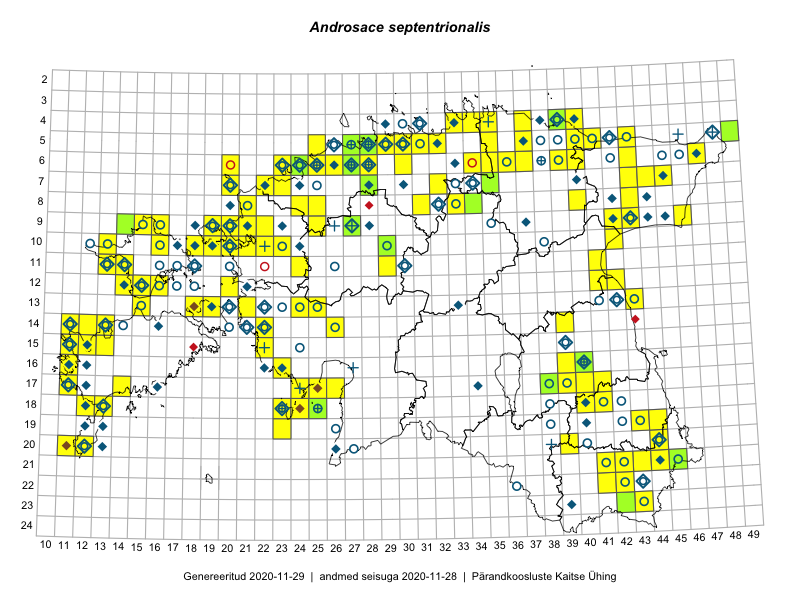

Androsace septentrionalis
Uuendatud: 2016-12-07
Kaardile koondatud taksonid: Androsace septentrionalis L.

Kaart põhineb 158 kirjel, neist vaatlusi 155 ja eksemplare 3. Taksonit on leitud 112 ruudust.
| Ruut | Vaatleja(d) | Vaatlusaeg | Kirje tüüp | Viide andmebaasikirjele |
|---|---|---|---|---|
| 07-35 | Peedu Saar, Timo Luhamäe | 2015-05-12 | ruut/ala | vaata PlutoFis |
| 06-39 | Peedu Saar, Timo Luhamäe | 2015-05-13 | ruut/ala | vaata PlutoFis |
| 06-40 | Peedu Saar, Timo Luhamäe | 2015-05-13 | ruut/ala | vaata PlutoFis |
| 09-43 | Peedu Saar | 2015-05-14 | ruut/ala | vaata PlutoFis |
| 10-42 | Peedu Saar | 2015-05-14 | ruut/ala | vaata PlutoFis |
| 16-40 | Thea Kull | 2015-07-07 | ruut/ala | vaata PlutoFis |
| 05-32 | Rein Kalamees | 2015-06-05 | ruut/ala | vaata PlutoFis |
| 09-14 | Peedu Saar, Toomas Kukk | 2015-05-27 | ruut/ala | vaata PlutoFis |
| 09-15 | Peedu Saar, Toomas Kukk | 2015-05-27 | ruut/ala | vaata PlutoFis |
| 09-14 | Toomas Kukk, Eerik Leibak | 2015-08-10 | ruut/ala | vaata PlutoFis |
| 12-20 | Ott Luuk | 2014-07-24 | ruut/ala | vaata PlutoFis |
| 05-49 | Tiit Hallikma, Toomas Kukk | 2015-07-22 | ruut/ala | vaata PlutoFis |
| 09-16 | Toomas Kukk, Eerik Leibak | 2015-08-11 | ruut/ala | vaata PlutoFis |
| 18-40 | Malle Leht | 2015-05-12 | ruut/ala | vaata PlutoFis |
| 10-29 | Toomas Kukk, Tiit Hallikma | 2015-06-11 | punkt | vaata PlutoFis |
| 09-15 | Toomas Kukk, Peedu Saar | 2015-05-27 | punkt | vaata PlutoFis |
| 10-29 | Tiit Hallikma, Toomas Kukk | 2015-06-11 | ruut/ala | vaata PlutoFis |
| 05-35 | Rein Kalamees, Kersti Püssa | 2015-06-06 | ruut/ala | vaata PlutoFis |
| 06-34 | Rein Kalamees, Kersti Püssa | 2015-09-11 | ruut/ala | vaata PlutoFis |
| 14-26 | Tiit Hallikma, Indrek Tammekänd, Toomas Kukk | 2015-06-08 | ruut/ala | vaata PlutoFis |
| 06-43 | Tiit Hallikma, Toomas Kukk | 2015-05-30 | ruut/ala | vaata PlutoFis |
| 04-34 | Rein Kalamees, Kersti Püssa | 2015-06-02 | ruut/ala | vaata PlutoFis |
| 04-37 | Rein Kalamees, Kersti Püssa | 2015-05-31 | ruut/ala | vaata PlutoFis |
| 04-33 | Rein Kalamees, Kersti Püssa | 2015-06-06 | ruut/ala | vaata PlutoFis |
| 13-24 | Rein Kalamees, Kersti Püssa | 2015-04-30 | ruut/ala | vaata PlutoFis |
| 07-45 | Ott Luuk, Hannes Pehlak | 2015-07-22 | ruut/ala | vaata PlutoFis |
| 08-43 | Thea Kull, Eerik Leibak | 2016-07-24 | ruut/ala | vaata PlutoFis |
| 17-40 | Thea Kull, Peedu Saar | 2015-06-19 | ruut/ala | vaata PlutoFis |
| 18-23 | Ott Luuk, Elle Roosaluste | 2015-05-29 | ruut/ala | vaata PlutoFis |
| 19-23 | Ott Luuk | 2015-05-30 | ruut/ala | vaata PlutoFis |
| 08-33 | Jana-Maria Habicht, Ester Valdvee | 2015-05-30 | ruut/ala | vaata PlutoFis |
| 08-34 | Jana-Maria Habicht, Ester Valdvee, Kirke Pilvik | 2015-05-17 | ruut/ala | vaata PlutoFis |
| 17-25 | Ott Luuk, Eerik Leibak | 2015-05-21 | ruut/ala | vaata PlutoFis |
| 17-24 | Ott Luuk, Eerik Leibak | 2015-05-21 | ruut/ala | vaata PlutoFis |
| 15-22 | Vilma Kuusk, Indrek Tammekänd | 2015-06-30 | ruut/ala | vaata PlutoFis |
| 17-38 | Meeli Mesipuu | 2015-05-08 | ruut/ala | vaata PlutoFis |
| 17-38 | Meeli Mesipuu | 2015-05-08 | punkt | vaata PlutoFis |
| 19-43 | Maret Gerz, Jaak-Albert Metsoja | 2015-05-20 | ruut/ala | vaata PlutoFis |
| 15-11 | Mari Reitalu | 2014-05-14 | ruut/ala | vaata PlutoFis |
| 13-21 | Rein Kalamees, Kersti Püssa | 2015-06-28 | ruut/ala | vaata PlutoFis |
| 14-12 | Mari Reitalu, Triin Reitalu | 2015-05-24 | ruut/ala | vaata PlutoFis |
| 17-14 | Mari Reitalu, Sirje Azarov | 2015-05-12 | ruut/ala | vaata PlutoFis |
| 06-34 | Kai Rünk, Ülle Jõgar, Illi Tarmu | 2015-05-22T10:00Z | ruut/ala | vaata PlutoFis |
| 13-19 | Meeli Mesipuu, Kadri Tali | 2015-06-24 | ruut/ala | vaata PlutoFis |
| 14-11 | Mari Reitalu, Oliver Parrest | 2015-07-14 | ruut/ala | vaata PlutoFis |
| 22-42 | Karin Kikas, Elle Rajandu | 2015-05-25 | ruut/ala | vaata PlutoFis |
| 14-13 | Mari Reitalu, Oliver Parrest | 2015-05-14 | ruut/ala | vaata PlutoFis |
| 17-25 | Maret Gerz, Leena Gerz | 2015-08-08 | ruut/ala | vaata PlutoFis |
| 16-23 | Maret Gerz, Leena Gerz | 2015-08-16 | ruut/ala | vaata PlutoFis |
| 18-12 | Mari Reitalu, Oliver Parrest | 2015-05-22 | ruut/ala | vaata PlutoFis |
| 15-13 | Mari Reitalu, Oliver Parrest | 2015-05-14 | ruut/ala | vaata PlutoFis |
| 20-11 | Mari Reitalu, Oliver Parrest | 2015-05-26 | ruut/ala | vaata PlutoFis |
| 09-42 | Timo Luhamäe, Liina Oja | 2015-05-14 | ruut/ala | vaata PlutoFis |
| 20-12 | Mari Reitalu, Oliver Parrest | 2015-05-26 | ruut/ala | vaata PlutoFis |
| 20-12 | Triin Reitalu, Sirje Azarov | 2015-05-30 | ruut/ala | vaata PlutoFis |
| 16-11 | Triin Reitalu, Mari Reitalu | 2015-08-09 | ruut/ala | vaata PlutoFis |
| 18-13 | Mari Reitalu, Oliver Parrest | 2015-05-27 | ruut/ala | vaata PlutoFis |
| 17-11 | Mari Reitalu, Triin Reitalu | 2015-05-19 | ruut/ala | vaata PlutoFis |
| 17-41 | Karin Kikas, Elle Rajandu | 2015-05-14 | ruut/ala | vaata PlutoFis |
| 17-11 | Mari Reitalu, Triin Reitalu | 2015-08-05 | ruut/ala | vaata PlutoFis |
| 06-37 | Ott Luuk, Liina Oja | 2015-05-13 | ruut/ala | vaata PlutoFis |
| 06-36 | Ott Luuk, Liina Oja | 2015-05-13 | ruut/ala | vaata PlutoFis |
| 08-40 | Karin Kikas, Elle Rajandu | 2015-06-05 | ruut/ala | vaata PlutoFis |
| 07-44 | Timo Luhamäe, Eerik Leibak | 2015-05-30 | ruut/ala | vaata PlutoFis |
| 06-47 | Timo Luhamäe, Eerik Leibak | 2015-06-01 | ruut/ala | vaata PlutoFis |
| 11-13 | Meeli Mesipuu, Timo Luhamäe | 2015-05-27 | ruut/ala | vaata PlutoFis |
| 06-47 | Mari Metsoja, Jaak-Albert Metsoja | 2015-07-22 | ruut/ala | vaata PlutoFis |
| 17-26 | Meeli Mesipuu | 2015-05-21 | ruut/ala | vaata PlutoFis |
| 06-25 | Mari Metsoja, Jaak-Albert Metsoja | 2015-07-25 | ruut/ala | vaata PlutoFis |
| 06-25 | Mari Metsoja, Jaak-Albert Metsoja | 2015-05-16 | ruut/ala | vaata PlutoFis |
| 11-29 | Toivo Sepp, Ott Luuk | 2015-05-18 | ruut/ala | vaata PlutoFis |
| 06-25 | Mari Metsoja, Jaak-Albert Metsoja | 2015-05-17 | ruut/ala | vaata PlutoFis |
| 08-24 | Mari Metsoja, Jaak-Albert Metsoja | 2015-05-23 | ruut/ala | vaata PlutoFis |
| 06-26 | Mari Metsoja, Jaak-Albert Metsoja | 2015-05-24 | ruut/ala | vaata PlutoFis |
| 05-25 | Mari Metsoja, Jaak-Albert Metsoja | 2015-05-30 | ruut/ala | vaata PlutoFis |
| 08-25 | Mari Metsoja, Jaak-Albert Metsoja | 2015-05-31 | ruut/ala | vaata PlutoFis |
| 06-24 | Jaak-Albert Metsoja, Mari Metsoja, Ott Luuk | 2015-06-05 | ruut/ala | vaata PlutoFis |
| 06-23 | Mari Metsoja, Jaak-Albert Metsoja, Ott Luuk | 2015-06-04 | ruut/ala | vaata PlutoFis |
| 06-23 | Jaak-Albert Metsoja, Mari Metsoja, Ott Luuk | 2015-06-05 | ruut/ala | vaata PlutoFis |
| 05-41 | Kaili Orav, Silvia Pihu | 2015-06-18 | ruut/ala | vaata PlutoFis |
| 04-39 | Kaili Orav, Silvia Pihu | 2015-06-19 | ruut/ala | vaata PlutoFis |
| 13-19 | Kadri Tali | 2015-10-05 | ruut/ala | vaata PlutoFis |
| 17-26 | Meeli Mesipuu | 2015-05-21 | punkt | vaata PlutoFis |
| 13-19 | Kadri Tali | 2015-06-03 | ruut/ala | vaata PlutoFis |
| 10-20 | Ott Luuk, Peedu Saar | 2014-07-29 | ruut/ala | vaata PlutoFis |
| 09-27 | Ott Luuk, Jaak-Albert Metsoja, Maret Gerz | 2014-06-10 | ruut/ala | vaata PlutoFis |
| 21-43 | Thea Kull, Meeli Mesipuu | 2016-04-26 | ruut/ala | vaata PlutoFis |
| 16-11 | Mari Reitalu, Triin Reitalu | 2015-08-09 | ruut/ala | vaata PlutoFis |
| 09-27 | Aat Sarv | 2015-05-15 | ruut/ala | vaata PlutoFis |
| 07-23 | Tõnu Ploompuu | 2016-05-07 | ruut/ala | vaata PlutoFis |
| 10-16 | Toomas Kukk, Peedu Saar | 2016-05-07 | ruut/ala | vaata PlutoFis |
| 12-15 | Toomas Kukk, Peedu Saar | 2016-05-07 | ruut/ala | vaata PlutoFis |
| 13-15 | Toomas Kukk, Peedu Saar | 2016-05-07 | ruut/ala | vaata PlutoFis |
| 08-31 | Thea Kull, Meeli Mesipuu | 2016-05-11 | ruut/ala | vaata PlutoFis |
| 12-15 | Peedu Saar, Toomas Kukk | 2016-05-07 | punkt | vaata PlutoFis |
| 13-15 | Peedu Saar, Toomas Kukk | 2016-05-07 | punkt | vaata PlutoFis |
| 07-28 | Thea Kull, Meeli Mesipuu | 2016-05-13 | ruut/ala | vaata PlutoFis |
| 14-22 | Peedu Saar, Toomas Kukk | 2016-05-14 | punkt | vaata PlutoFis |
| 15-22 | Peedu Saar, Toomas Kukk | 2016-05-14 | punkt | vaata PlutoFis |
| 10-19 | Toomas Kukk, Peedu Saar | 2016-05-12 | ruut/ala | vaata PlutoFis |
| 06-35 | Ott Luuk, Tiit Hallikma | 2016-05-20 | ruut/ala | vaata PlutoFis |
| 04-39 | Ott Luuk, Tiit Hallikma | 2016-05-19 | ruut/ala | vaata PlutoFis |
| 10-18 | Toomas Kukk, Peedu Saar | 2016-05-13 | ruut/ala | vaata PlutoFis |
| 09-19 | Toomas Kukk, Peedu Saar | 2016-05-13 | punkt | vaata PlutoFis |
| 09-20 | Toomas Kukk, Peedu Saar | 2016-05-13 | punkt | vaata PlutoFis |
| 10-18 | Toomas Kukk, Peedu Saar | 2016-05-13 | punkt | vaata PlutoFis |
| 04-40 | Ott Luuk, Tiit Hallikma | 2016-05-19 | ruut/ala | vaata PlutoFis |
| 14-22 | Toomas Kukk, Peedu Saar | 2016-05-14 | ruut/ala | vaata PlutoFis |
| 15-22 | Toomas Kukk, Peedu Saar | 2016-05-14 | ruut/ala | vaata PlutoFis |
| 11-24 | Ott Luuk, Tiit Hallikma | 2016-05-12 | ruut/ala | vaata PlutoFis |
| 09-25 | Ott Luuk, Tiit Hallikma | 2016-05-13 | ruut/ala | vaata PlutoFis |
| 05-29 | Peedu Saar | 2016-05-24 | punkt | vaata PlutoFis |
| 05-29 | Peedu Saar | 2016-05-24 | ruut/ala | vaata PlutoFis |
| 09-21 | Kadi-Liis Kesler, Tõnu Ploompuu | 2015-07-14 | ruut/ala | vaata PlutoFis |
| 06-28 | Tõnu Ploompuu | 2015-06-06 | ruut/ala | vaata PlutoFis |
| 09-21 | Sirje Lagle, Tõnu Ploompuu | 2015-05-16 | ruut/ala | vaata PlutoFis |
| 09-22 | Sirje Lagle, Tõnu Ploompuu | 2015-05-15 | ruut/ala | vaata PlutoFis |
| 06-28 | Toomas Kukk | 2016-06-02 | ruut/ala | vaata PlutoFis |
| 06-28 | Toomas Kukk | 2016-06-06 | ruut/ala | vaata PlutoFis |
| 10-21 | Tõnu Ploompuu | 2015-05-02 | ruut/ala | vaata PlutoFis |
| 10-22 | Tõnu Ploompuu | 2015-05-20 | ruut/ala | vaata PlutoFis |
| 10-23 | Sirje Lagle, Tõnu Ploompuu | 2015-05-15 | ruut/ala | vaata PlutoFis |
| 13-43 | Kai Rünk, Ülle Jõgar, Illi Tarmu | 2016-06-10T06:30Z | ruut/ala | vaata PlutoFis |
| 21-45 | Toomas Kukk, Tiit Hallikma, Johannes Kõdar | 2016-06-14 | ruut/ala | vaata PlutoFis |
| 22-41 | Toomas Kukk, Tiit Hallikma | 2016-06-16 | ruut/ala | vaata PlutoFis |
| 19-43 | Sander Laherand, Ott Luuk | 2016-06-17 | ruut/ala | vaata PlutoFis |
| 13-25 | Thea Kull | 2016-06-22 | ruut/ala | vaata PlutoFis |
| 21-41 | Ott Luuk, Sander Laherand | 2016-06-16 | ruut/ala | vaata PlutoFis |
| 06-24 | Thea Kull, Helle Mäemets | 2016-07-07 | ruut/ala | vaata PlutoFis |
| 06-28 | Toomas Kukk | 2016-07-04 | ruut/ala | vaata PlutoFis |
| 06-25 | Toomas Kukk, Sander Laherand | 2016-07-05 | ruut/ala | vaata PlutoFis |
| 19-44 | Tarmo Niitla, Peedu Saar | 2016-06-15 | ruut/ala | vaata PlutoFis |
| 05-37 | Tõnu Ploompuu, Eerik Leibak | 2016-07-27 | ruut/ala | vaata PlutoFis |
| 11-14 | Peedu Saar, Thea Kull | 2016-08-09 | ruut/ala | vaata PlutoFis |
| 04-35 | Sander Laherand, Ott Luuk, Nele Jõessar | 2016-07-26 | ruut/ala | vaata PlutoFis |
| 12-15 | Toomas Kukk, Meeli Mesipuu | 2016-08-10 | ruut/ala | vaata PlutoFis |
| 10-19 | Rein Kalamees, Liina Oja | 2016-07-07 | ruut/ala | vaata PlutoFis |
| 07-32 | Rein Kalamees, Kersti Püssa | 2016-06-23 | ruut/ala | vaata PlutoFis |
| 09-46 | Rein Kalamees, Kersti Püssa | 2016-06-28 | ruut/ala | vaata PlutoFis |
| 08-21 | Tiit Hallikma, Tõnu Ploompuu | 2016-07-07 | ruut/ala | vaata PlutoFis |
| 10-19 | Ott Luuk, Meeli Mesipuu | 2016-09-15 | ruut/ala | vaata PlutoFis |
| 05-35 | Peedu Saar, Liina Oja, Susanna Vain | 2016-07-27 | ruut/ala | vaata PlutoFis |
| 05-40 | Peedu Saar, Sander Laherand | 2016-07-28 | ruut/ala | vaata PlutoFis |
| 08-25 | Meeli Mesipuu, Thea Kull | 2016-05-12 | ruut/ala | vaata PlutoFis |
| 05-28 | Kadi-Liis Kesler, Tiina Elvisto | 2015-05-12 | ruut/ala | vaata PlutoFis |
| 05-29 | Kadi-Liis Kesler, Tiina Elvisto | 2015-05-12 | ruut/ala | vaata PlutoFis |
| 05-27 | Kadi-Liis Kesler | 2015-05-30 | ruut/ala | vaata PlutoFis |
| 15-22 | Meeli Mesipuu, Sirje Azarov | 2016-07-04 | ruut/ala | vaata PlutoFis |
| 06-30 | Kadi-Liis Kesler, Tiina Elvisto | 2015-05-26 | ruut/ala | vaata PlutoFis |
| 06-37 | Meeli Mesipuu, Tiit Hallikma | 2016-07-27 | ruut/ala | vaata PlutoFis |
| 18-41 | Ott Luuk, Sander Laherand, Susanna Vain | 2016-06-13 | ruut/ala | vaata PlutoFis |
| 07-28 | Meeli Mesipuu, Thea Kull | 2016-05-12 | punkt | vaata PlutoFis |
| 08-31 | Meeli Mesipuu, Thea Kull | 2016-05-11 | punkt | vaata PlutoFis |
| 09-21 | Jaak-Albert Metsoja, Mari Metsoja | 2016-07-07 | ruut/ala | vaata PlutoFis |
| 07-22 | Marju Erit | 2015-05-01 | ruut/ala | vaata PlutoFis |
| 07-35 | Peedu Saar, Timo Luhamäe | 2015-05-12 | eksemplar | vaata PlutoFis |
| 08-34 | Jana-Maria Habicht | 2015-05-17 | eksemplar | vaata PlutoFis |
| 09-27 | Ott Luuk | 2014-06-10 | eksemplar | vaata PlutoFis |